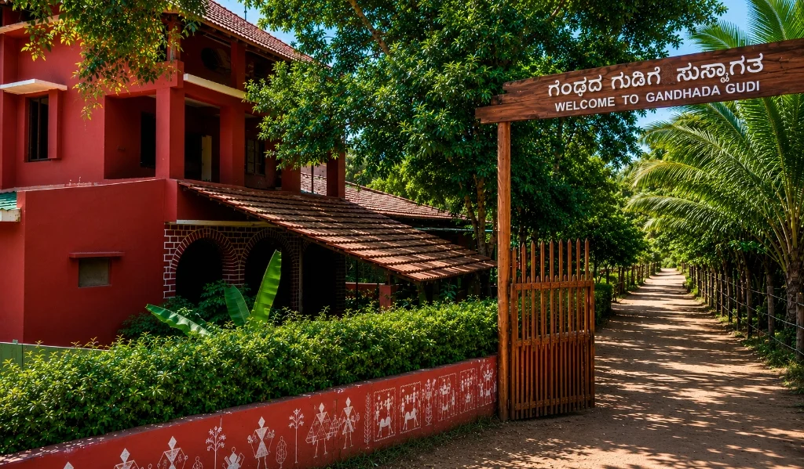
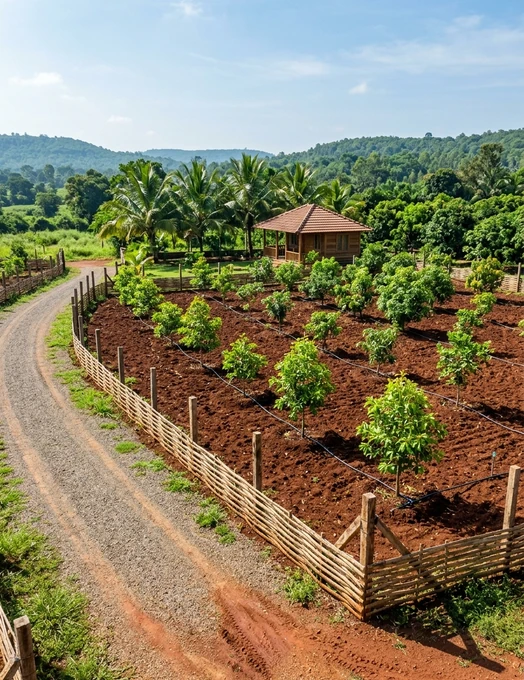

Acres of managed farmland
120 acres / Limited plots available
Land that grows
with you.
Own a fully managed farm in the red soil of Yelandur — with sandalwood, fruit trees and livestock cared for from plantation to harvest.
Clear land titleEnd-to-end managementOwner stays included

Where nature
meets opportunity.
meets opportunity.
Sq. ft. per managed plot
Sandalwood & fruit trees per plot
Years to sandalwood maturity
02 The proposition
A considered agricultural investment
Not just a plot.
A living, managed ecosystem.
Krushi Bhoomi brings sandalwood plantations, seasonal fruit, indigenous livestock and responsible land management together on one farm.
See how the model works ↗03 On the farm
Three income horizons. One plot.
A farm designed
to work in cycles.

01 / Foundation
Managed farm plots
Registered land, plantation setup, irrigation, upkeep and security — handled by an experienced on-ground team.

02 / Long term
Sandalwood
High-value trees nurtured in fertile red loam soil, with a 10–15 year path to harvest maturity.

03 / Annual
Fruit orchards
Seasonal fruit plantations offer recurring harvests while adding diversity to the farm ecosystem.

04 / Daily
Livestock
Indigenous cattle and managed animal husbandry create daily utility and complement natural farming.
04 Why Krushi Bhoomi
Built for ownership without the operational burden
Every detail,
considered.
Ownership
Registered sale deed and clear land title in your name from day one.
Stewardship
Plantation, irrigation, livestock care and maintenance managed for you.
Visibility
Regular photo and video updates keep you connected to your land.
Security
Electrical fencing, CCTV and dedicated personnel protect the farm 24/7.
05 Common questions
Know before you grow
Good land starts
with clear answers.
Is my investment secure?+
Every plot comes with a registered sale deed and clear land title in your name, backed by documentation and round-the-clock farm security.
What is the minimum investment?+
The smallest managed plot is 6,500 sq. ft. at ₹19.4 lakhs, with larger plot sizes also available.
Can I visit and stay at my farm?+
Yes. Owners can visit anytime, and shared cottages are available on the farm for owner stays.
Can I exit before sandalwood matures?+
Because the land and trees are registered in your name, you may hold, use or sell your plot independently.
Visits now open
Walk the land.
See the future.
Visit the 120-acre farm in Yeragamballi Village, Yelandur Taluk and meet the team managing it.